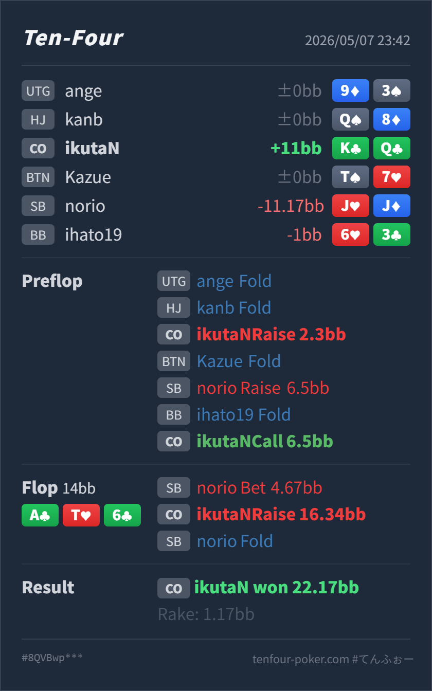

T4 HAND REVIEW
CO K♣Q♣ の A-high 3bet pot flop combo draw raise レビュー
GTO基準ではpreflop callは良く、flop raiseは有力なmix候補です。
Hero: CO
K♣ Q♣Villain: SB
J♥ J♦Board:
A♣ T♥ 6♣- 主要論点: SB 3bet potの
A♣ T♥ 6♣で、K♣Q♣をcallで実現するか、raiseでfold equityを取りに行くか。 - 次回の判断基準: 相手の小さめ3betと小さめcbetが広いレンジを含むならraise寄り、強いAx以上へ偏るならcall優先にします。
- 5枚役確認: Flop時点のHeroの確定5枚は
A♣ K♣ Q♣ T♥ 6♣のA-highです。まだflushではなく、上にはone pair以上がすべてあります。
ハンド要約
- Hero
- CO
K♣ Q♣ - Villain
- SB
J♥ J♦ - 形式
- T4 6MAX Cash
- Preflop
- UTG fold, HJ fold, CO Hero raise
2.3BB, BTN fold, SB Villain raise6.5BB, BB fold, CO Hero call - Board
A♣ T♥ 6♣- Flop
- Pot
14BB, SB Villain bet4.67BB, CO Hero raise16.34BB, SB Villain fold - Result
- CO Hero won
22.17BB, rake1.17BB

判断のズレ
| 論点 | その場で置いた見立て | どこがズレやすいか | 次回の基準 |
|---|---|---|---|
| preflopのSB 3bet size | KQs なのでcallできそう | SBがOOPから 6.5BB は小さめで、COはかなり良い価格でposition付きにできます。ここで降りると守りすぎです。 | 小さめOOP 3betには、suited broadwayを広めにdefendする |
| flopのhand strength | clubが多く、かなり強そう | K♣Q♣ は強いcombo drawですが、現状はA-highでmade handではありません。相手の JJ にも現時点では負けています。 | 4枚clubは完成役ではなく、nut flush draw + gutshotとして扱う |
| flop raise | drawで押し切れそう | raiseはfold equity込みで強い一方、相手が AK/AQ/AA/TT/AT に寄って続行するならcallの方が実現しやすいです。 | 小さめcbetがunderpairや空振りを含む相手にはraise、強い継続レンジにはcall |
ストリート別レビュー
| ストリート | その時点の見え方 | 実ハンドの位置づけ | 評価 | その場の一手 |
|---|---|---|---|---|
| Preflop | CO openに対してSBがOOPから小さめに3betした場面です。COはpositionがあり、必要な防衛頻度も上がります。 | K♣Q♣ はcallに十分なsuited broadwayです。4bet bluffにも使えますが、callでIP実現を取りやすいです。 | 良い | 6.5BB へのcallで問題ありません。 |
Flop A♣ T♥ 6♣ | SBは AK/AQ/AA/TT を多く持つ一方、小さめcbetには JJ/QQ/KK やclubなしのbroadwayも残りやすいです。 | HeroはA-highですが、nut flush drawとBroadway gutshotを持つ高EQのsemi-bluff候補です。 | 良い寄り | callが標準寄りで、raiseはmix候補です。相手が小さめcbetからunderpairを降ろすなら、今回のraiseは実戦的にかなり良いです。 |
持ち帰り
A♣ T♥ 6♣のK♣Q♣は、現状の役としてはA-highです。強いのはmade handではなく、nut flush drawとJ待ちBroadwayの将来価値です。- SBのpreflop
6.5BBはOOPとして小さめなので、COはKQsをかなり自然にcallできます。 - Flopの
4.67BB into 14BBも小さめで、range bet寄りに見えます。このサイズに対しては、強いdrawでraiseを混ぜて相手のJJ/QQ/KKno club や空振りを降ろす価値があります。 - ただし、相手がこの小さめbetを強いAx以上中心で使うタイプなら、raise頻度を下げてcallでturnを見ます。
exploit 補足
- 実戦のSBは
J♥J♦でclubを持たず、flop raiseに対してかなり苦しいhandです。この相手が同じ小さめcbetからunderpairを素直に降ろすなら、K♣Q♣のraiseは大きく利益化できます。 - 一方で、raiseに対して
AK/AQやsetだけで続行する相手には、こちらのfold equityが落ちます。その場合は、pot oddsの良いcallでdrawの実現を優先します。